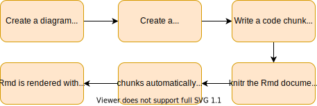

Overview
The knitrdrawio package adds a drawio engine to knitr, which can be used to automatically export draw.io diagrams into images from code chunks in RMarkdown (Rmd) documents.
You can thus include both your diagrams’ source files and the process to produce the diagrams in your computational documents.
Installation
knitrdrawio is only available on GitHub, you must therefore use remotes, or devtools to install it.
Using remotes:
install.packages("remotes")
remotes::install_github("rchaput/knitdrawio")knitrdrawio also needs you to have the draw.io desktop app installed on your system, which you can download directly from their GitHub releases.
Usage
Loading the package
knitrdrawio must be loaded in your Rmd document in order for knitr to recognize the new engine. Simply add a code chunk somewhere at the beginning of your document:
```{r}
library(knitrdrawio)
```If you do not include the library(knitrdrawio) line before you use a drawio chunk, knitr will complain and produce the following warning:
Warning in get_engine(options$engine) : Unknown language engine ‘drawio’ (must be registered via knit_engines$set()).
In addition, the chunk (and thus your diagram) will not be rendered.
Rendering a diagram
To produce a diagram within a Rmd document, put a new chunk using the drawio engine, i.e., setting drawio as the first word inside the brackets:
```{drawio diag1, src = "/path/to/diagram.drawio"}
```In this example, diag1 is the label, or name, of your diagram. This name is used in the knitr progress report in your console, log messages, as well as in the filename of the produced diagram.
If you do not specify it, knitr will generate one label for you, such as unnamed-chunk-1, which works fine, but makes harder to identify which file corresponds to which diagram.
The src chunk option is relative to knitrdrawio and is mandatory: it specifies the path to your source diagram, usually a .drawio file.
With the previous code chunk, and assuming that the source file exists, and is a correct diagram, when the document is rendered, knitrdrawio will automatically call draw.io to render the diagram. The resulting image will be included in the document, as the following example shows:

Adding options
knitrdrawio supports many options to control its behaviour.
The export process itself can be controlled by options, which are quite similar to those offered by draw.io when exporting a diagram on the desktop app. Such options include the ability to crop a document, to choose the page index to export, to add a border, etc.
The chunk and how it will be included in the document can be controlled by several knitr options. Note that knitrdrawio was not tested against all of these options, and some of them might not work.
Drawio-specific options
We list here the chunk options that can be used in knitrdrawio, their draw.io equivalent, and default values if left unspecified.
For example, the page.range option can be used as such:
```{drawio diag-with-page-range, src = "/path/to/diagram.drawio", page.range = "2..4"}
```
kable(data.frame(
option = c("src", "format", "crop", "transparent", "border", "page.index", "page.range"),
equivalent = c("`input file`", "-f --format", "--crop", "-t --transparent", "-b --border", "-p --page-index", "-g --page-range"),
desc = c("Path to the source diagram to export, usually a .drawio, .xml, or .vsdx file.", "Export format to use. Possible values are: pdf, png, jpg, svg, vsdx, xml.", "Whether to crop resulting image to diagram size.", "Set transparent background for PNG.", "Set border width around diagram. Non-zero values show the border, 0 to disable border.", "Select a specific page to export.", "Similar to page.index, but selecting a range instead. For PDF only. Usage: from..to"),
default = c("(Mandatory argument)", "Depends on document output format: latex => pdf, html => svg, other => png", "TRUE", "FALSE", "0", "If output format is an image => 1st page, otherwise => all pages are exported.", "NULL")
),
col.names = c("Chunk option", "Drawio equivalent", "Description", "Default value"))| Chunk option | Drawio equivalent | Description | Default value |
|---|---|---|---|
| src | input file |
Path to the source diagram to export, usually a .drawio, .xml, or .vsdx file. | (Mandatory argument) |
| format | -f –format | Export format to use. Possible values are: pdf, png, jpg, svg, vsdx, xml. | Depends on document output format: latex => pdf, html => svg, other => png |
| crop | –crop | Whether to crop resulting image to diagram size. | TRUE |
| transparent | -t –transparent | Set transparent background for PNG. | FALSE |
| border | -b –border | Set border width around diagram. Non-zero values show the border, 0 to disable border. | 0 |
| page.index | -p –page-index | Select a specific page to export. | If output format is an image => 1st page, otherwise => all pages are exported. |
| page.range | -g –page-range | Similar to page.index, but selecting a range instead. For PDF only. Usage: from..to | NULL |
For more details, please see the draw.io command line help, with drawio --help.
Knitr options
knitrdrawio uses knitr chunks, and thus rely on the chunk options. We only list a few options of interest below.
Labelling the diagram chunk
The label chunk option controls the name that will be given to the resulting image. By default, knitr will set a label if left unspecified, such as unnamed-chunk-1, but this makes harder to identify the file that corresponds to a diagram. In addition, if the chunk rendering fails, it is harder to identify from the log which of your diagrams has an error.
Note that knitr allows a special syntax for this option, as the label= part can be skipped. Thus, instead of writing {drawio label=diag1}, we use in our examples the simpler {drawio diag1}.
Naming and referencing the diagram figure
As the diagram is included as an image in the Rmd document, it can be named and referenced just like other images, by setting the “figure caption” option fig.cap.
Depending on your document output format, the caption will appear somewhere near the figure, e.g., below, above, or in the margin.
See for example the following chunk and its result:
```{drawio test-fig-cap, src = "workflow.drawio", fig.cap = "An example workflow."}
```An example workflow.
Note: at the time of writing, it is not possible to split the chunk option line. This means that long fig.cap can be hard to read. Fortunately, knitr proposes an alternative syntax, based on YAML, to specify chunk options in the chunk itself. See the following chunk example:
```{drawio test-fig-cap-long, src = "workflow.drawio"}
#| fig.cap: >
#| A very, very long sentence that shows how we can use YAML syntax to
#| write long figure captions directly in the chunk itself.
```Setting the path to drawio
In most cases, knitrdrawio should be able to find your installation of draw.io. However, if for some reason the detection fails, knitrdrawio will not work, and print an error message, prompting you to manually set the path to draw.io in the chunk options, by setting the engine.path option.
You can set it directly in each of your chunks, but this is rather cumbersome ; we recommend setting it for all chunks, using the knitr::opts_chunks$set function. To do so, place the following code in a chunk at the beginning of your document (it may be the same chunk used to load knitrdrawio):
knitr::opts_chunks$set(engine.path = list(
drawio = "/path/to/your/draw.io"
))Change the figure folder
By default, knitrdrawio will produce diagrams in the folder that knitr uses for figures (as diagrams are a special kind of figure). This folder can be controlled by the fig.path option.
For example, if you want to create the diagram in the figures/diagrams folder, you may use:
```{drawio diag2, src = "/path/to/diagram.drawio", fig.path = "figures/diagrams"}
```Non-existing directories are automatically created if necessary.
Cache the result
Exporting a diagram can be a long operation, especially as the size of your diagram grows. To avoid losing too much time, knitrdrawio may use the caching mechanism of knitr, if you set the cache chunk option to TRUE.
In this case, the produced diagram will be kept, and associated with a hash key, which determines whether the diagram should be rebuilt or not.
The hash key is invalidated when:
- the source diagram changes ;
- the chunk itself is changed.
Evaluate and/or include the diagram
As all knitr chunks, you may choose whether to evaluate and/or include a drawio chunk, by setting respectively the eval and include options.
When eval is set to FALSE, the chunk will not be executed, and the diagram not rendered. This may be useful if you know there is an error in your diagram, and you do not wish to crash your Rmd document.
When include is set to FALSE, the diagram is rendered, and the corresponding file is created in the figures directory, but the figure is not included in the Rmd document. This may be useful if you want to manually insert it later, or simply to produce the diagram to have it available on disk, but not actually use it.
Setting manually the drawio arguments
You can manually pass additional command-line arguments to the draw.io binary, by setting the standard engine.opts option.
Although most of the drawio arguments should be handled by knitrdrawio’s options, this is useful if one of your cases is not covered.
Note that you can set this option globally through the knitr::chunks_opt$set function, exactly as for the engine.path option.
Other options
Error-recovery behaviour
If the draw.io binary encounters an error, knitrdrawio may try to recover or immediately stop the whole document rendering.
This behaviour is controlled by the on.error chunk option, which you may specify either for a specific chunk, or for all chunks using the knitr::opts_chunks$set method.
The following values are recognized:
stop(default): Raise an informative error, and abort the process. Usually (depending on knitr’s configuration itself), this will stop the document rendering. It prevents generating a document with a missing or wrongly exported diagram.skip: Raise an informative warning, and skip the current diagram. The diagram will not be included in the document, and the document rendering goes on.continue: Raise an informative warning, but still try to include the diagram in the document. Asdraw.iodoes not explicitly signal errors, this method can be used when an error is falsely reported. However, please note that knitr will most likely fail if the diagram cannot be used (e.g., no image was generated)!